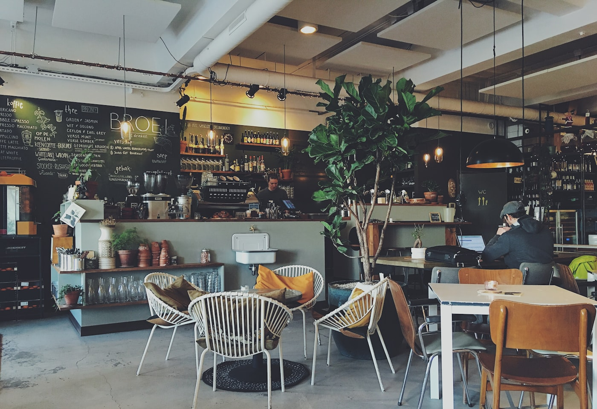

Кофе и еда в тихом дворе старого Петербурга
Завтраки, паста и десерты — без суеты, в самом центре.
Атмосфера
Секретное место в сердце города
Наш двор — это островок тишины, скрытый от шума больших проспектов массивными сводами старинной арки. Здесь время течёт иначе.
Летом открываем веранду, где под мягким светом ретро-гирлянд приятно встречать закаты с бокалом вина или чашкой свежесваренного кофе.


Еда и кофе
Крафтовые вкусы

Нордический обжиг
Светлая обжарка, бархатный вкус и мягкое шоколадное послевкусие.

Миндальная слойка
Хрустящая выпечка с миндальным кремом и тёплой карамельной ноткой.
Почему мы
Пространство для тех, кто ценит момент
Вкус
Свежие продукты, ручная подача и стабильное качество каждый день.
Локация
Центр Петербурга рядом с Невским, но без туристической суеты.
Атмосфера
Тёплый свет, спокойная музыка и уют для неспешных встреч.
Формат
Подходит и для работы утром, и для ужина вечером в спокойной атмосфере.